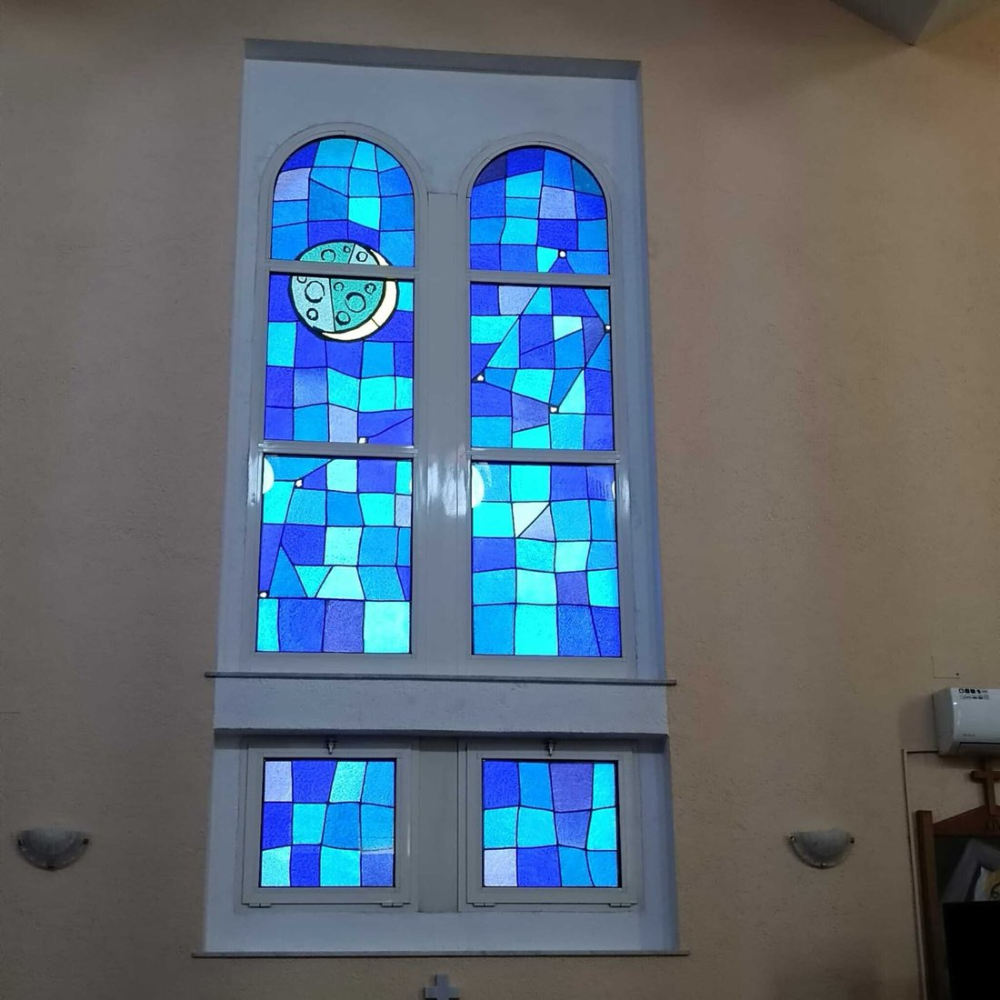
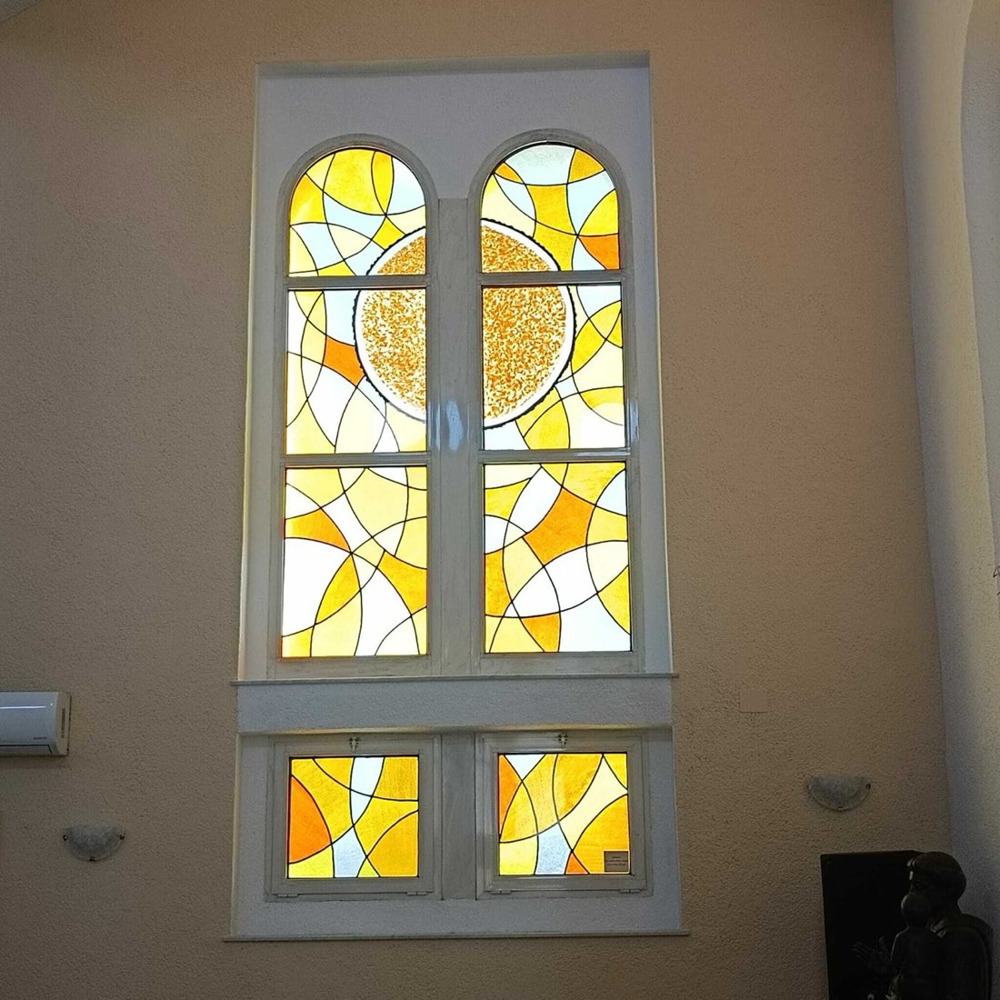

Vitraji
Vitraj (vitraž, franc. vitrail) je posebnim načinom oslikano staklo, najčešće na crkvenim prozorima, povezano olovnim okvirićima.
Staklorad i vitraji
Staklorad ima višegodišnje iskustvo u izradi i restauraciji vitraja. Surađujemo s raznim domaćim i inozemnim akademskim umjetnicima, a možemo ponuditi i izradu vitraja prema vašim vlastitim skicama i idejama.
Kako nastaje vitraj
Staklo se boji oksidima (manganov oksid boji ljubičasto, željezni plavo ili žuto), a vitrajer od komadića obojenog stakla slaže sliku – slično kao mozaičar, ali umjesto u zid komadiće uokviruje olovnim spojnicama. Postavljen na prozor, vitraj propušta sunčeve zrake i stvara najblistavije boje.
1200+m² vitraj stakla
Izradanova djela
Obnovarestauracija